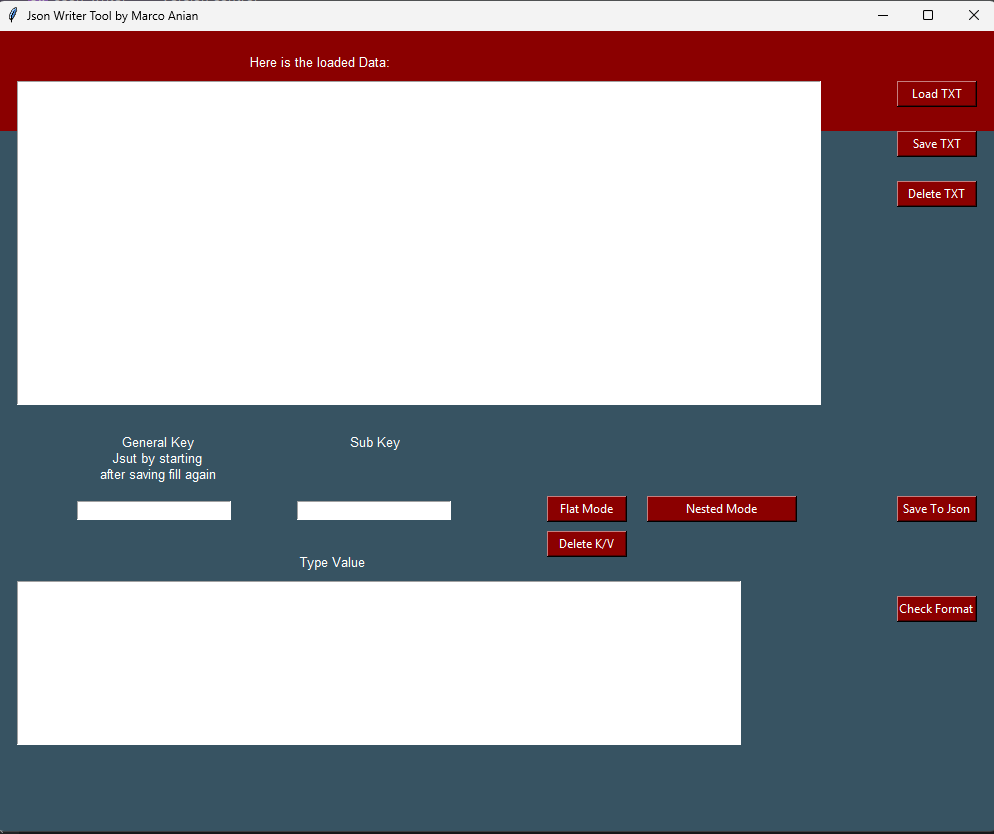

Python Json Writer Project
by Marco A.
The JSON Writer Project was born out of my need to
create my own JSON files from study lectures that I had to learn.
Since I wanted a Q&A tool, I first had to extract text from
PDFs and then import the processed data into my tool.
1. Launching the JSON Writer
- Load Source Data (must be a .txt file).
- Choose a Key (important to know whether it's a Flat or Nested structure).
- General Key Selection – If using a Nested JSON structure, subkeys must be assigned accordingly.
- Press the Save Button – This adds the key/value pair to a dictionary.
- Final Step – Once the user is ready, save the file as a .json file. (Users can check the format before saving).
